Manual de Usuario - Administrador
Portal de Proveedores Greenex
Versión generada: 17-02-2026
1. Acceso al Portal
- Ingrese a https://portal_proveedores.test/login.
- Complete correo y contraseña.
- Presione Ingresar.
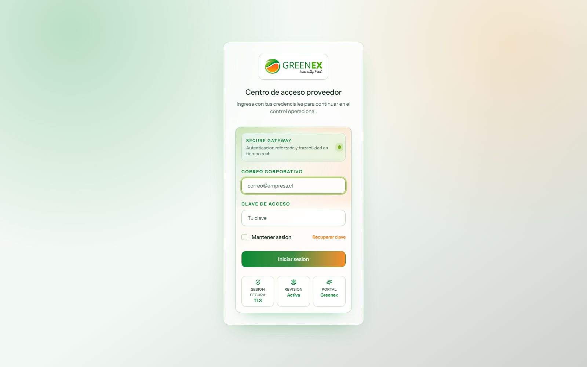
2. Vista General del Dashboard
Desde el dashboard puede revisar indicadores globales y accesos rápidos.
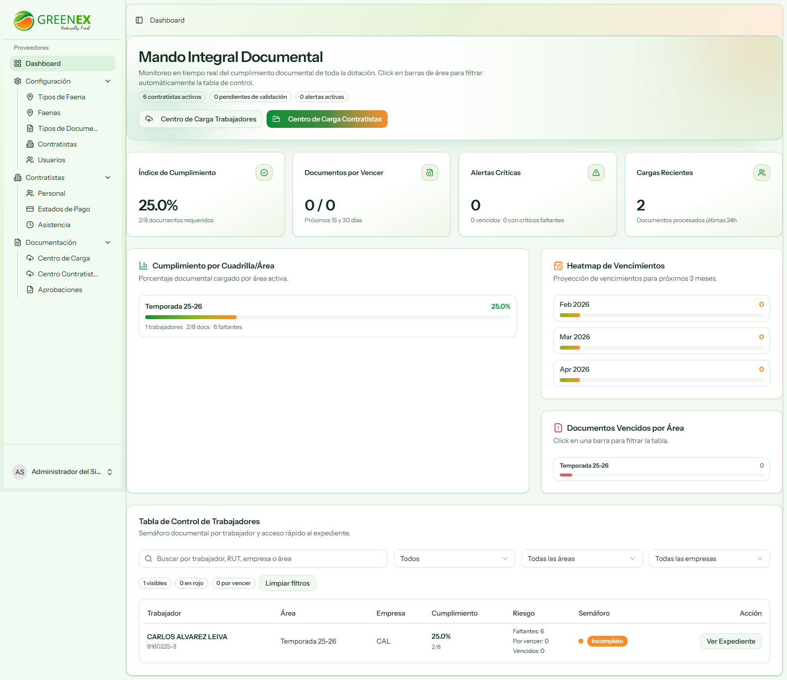
3. Menú Principal (Sidebar)
Orden de navegación para Administrador:
- Dashboard
- Configuración
- Contratistas
- Documentación
4. Configuración
4.1 Tipos de Faena
Permite crear y mantener los tipos de faena del sistema.
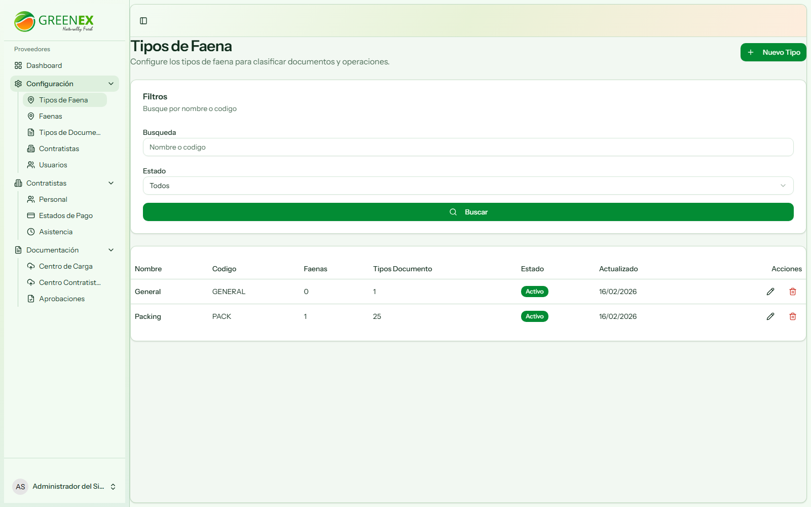
4.2 Faenas
Permite administrar faenas y asignaciones generales.
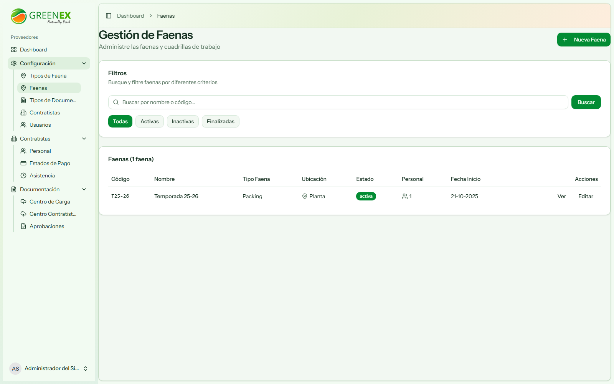
4.3 Tipos de Documentos
Permite definir documentos requeridos y sus reglas.
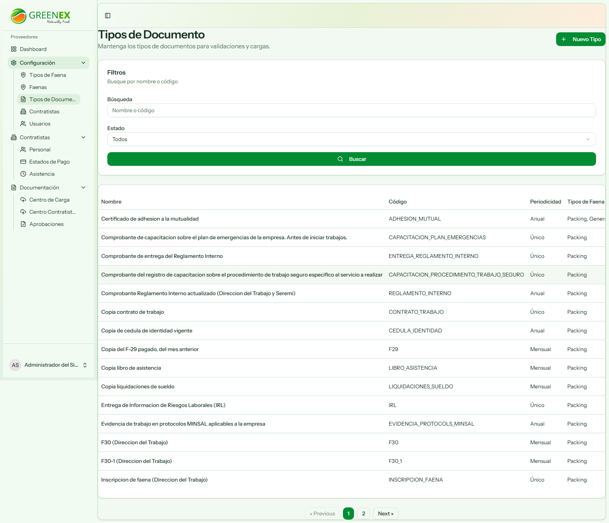
4.4 Contratistas
Gestión integral de empresas contratistas.
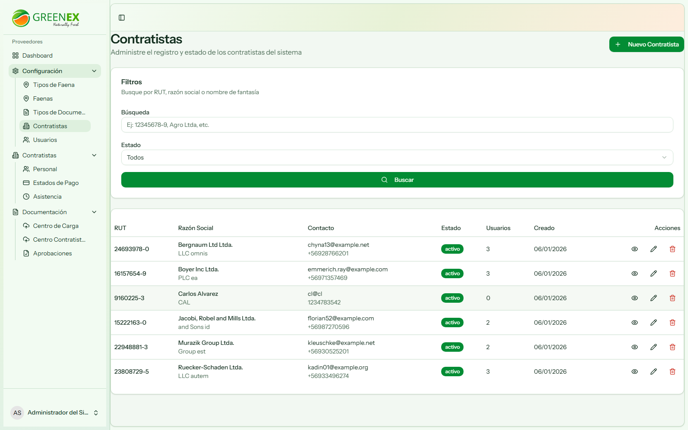
4.5 Usuarios
Administración de usuarios por rol y contratista.
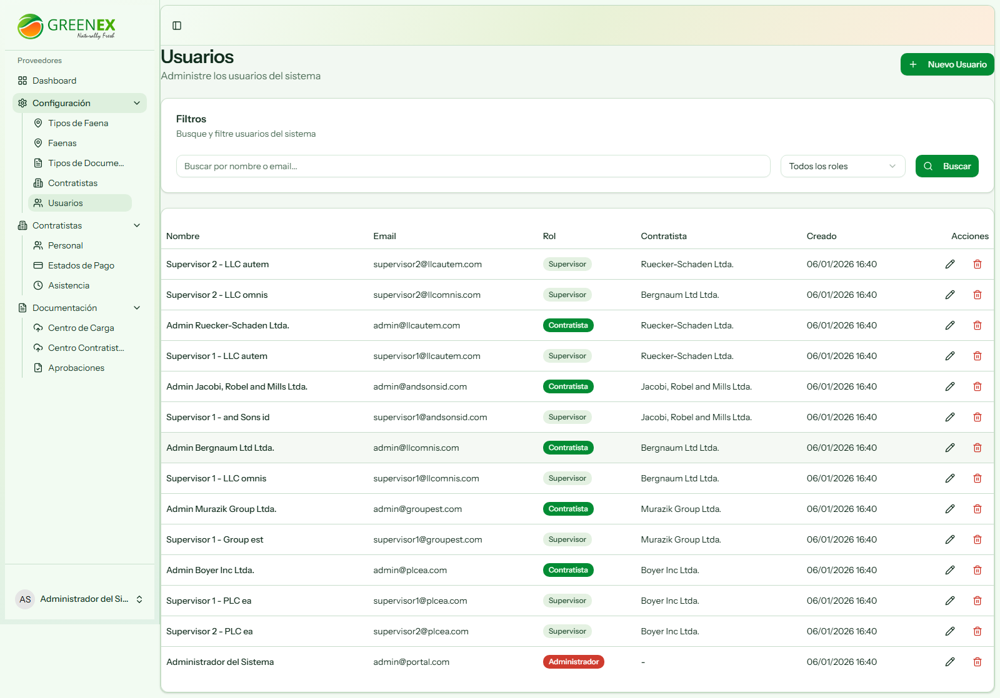
5. Módulo Contratistas
5.1 Personal
Listado y gestión de trabajadores.
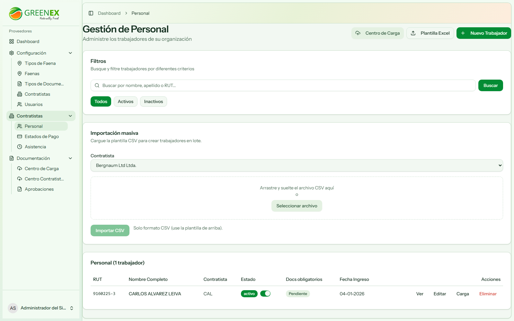
5.2 Estados de Pago
Control de estado de pago por contratista.
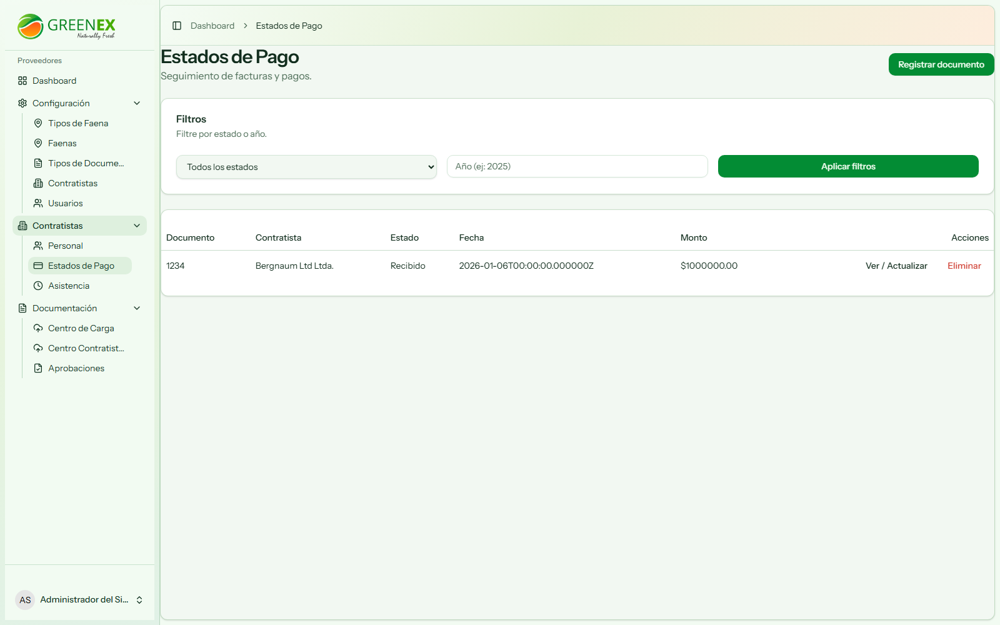
5.3 Asistencia
Registro y control de asistencia.
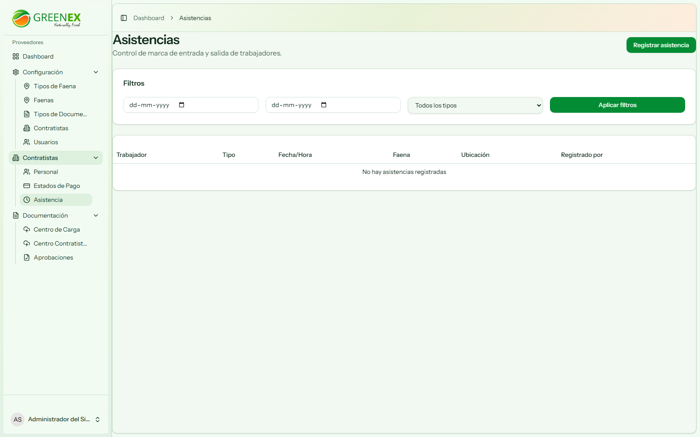
6. Módulo Documentación
6.1 Centro de Carga (Trabajadores)
Carga masiva/asistida de documentos de trabajadores con matching OCR.
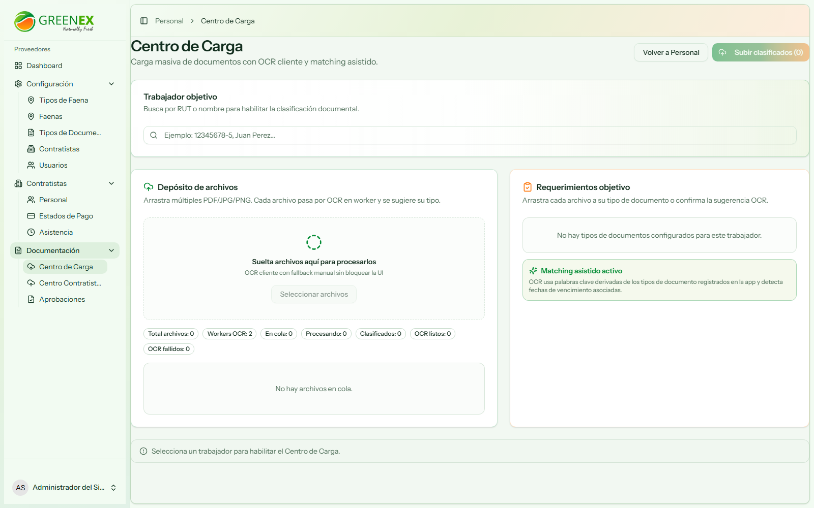
6.2 Centro Contratistas
Carga documental para requisitos de contratistas.
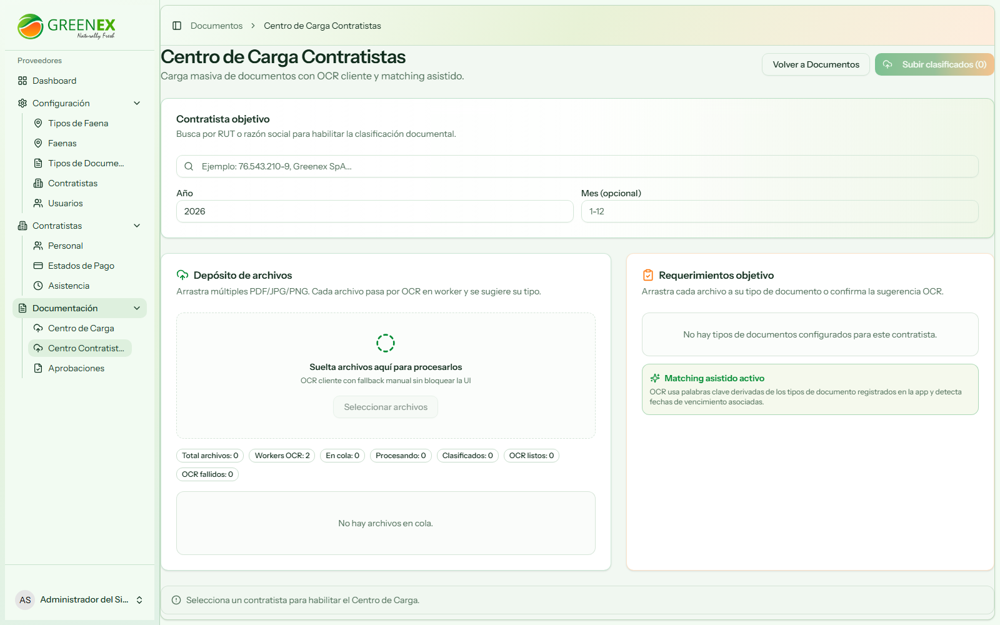
6.3 Aprobaciones
Bandeja de revisión y aprobación/rechazo documental.
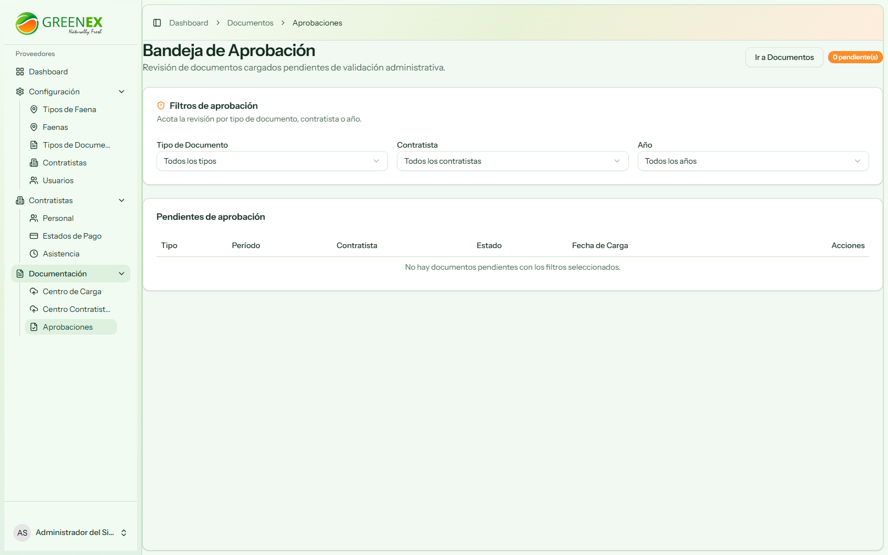
6.4 Expediente Documental
Visualización y filtros de documentos cargados.
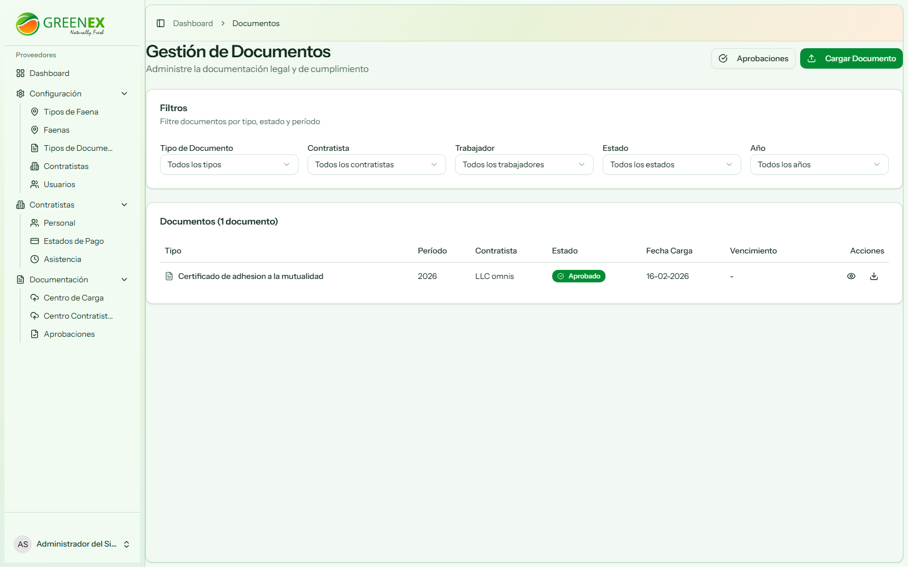
7. Flujo Recomendado de Operación
- Configurar Tipos de Faena y Tipos de Documento.
- Mantener contratistas y usuarios.
- Monitorear cargas en Centro de Carga y Centro Contratistas.
- Revisar y resolver pendientes en Aprobaciones.
- Auditar cumplimiento en Expediente Documental.